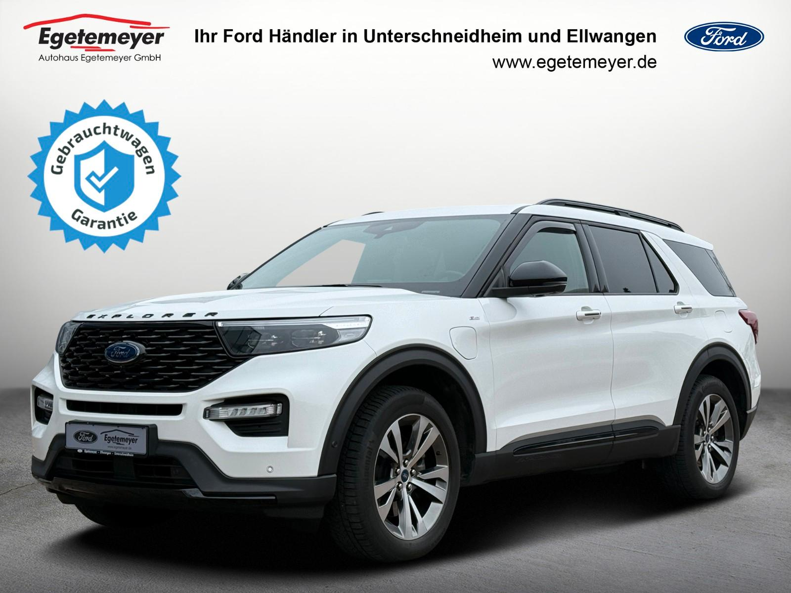
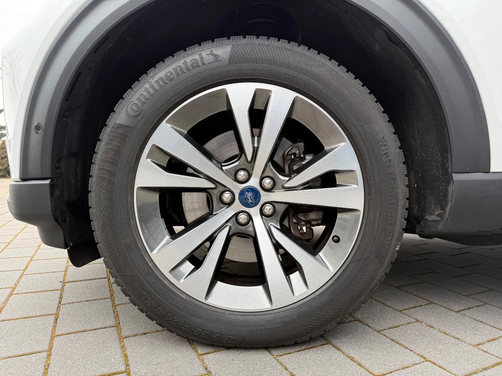
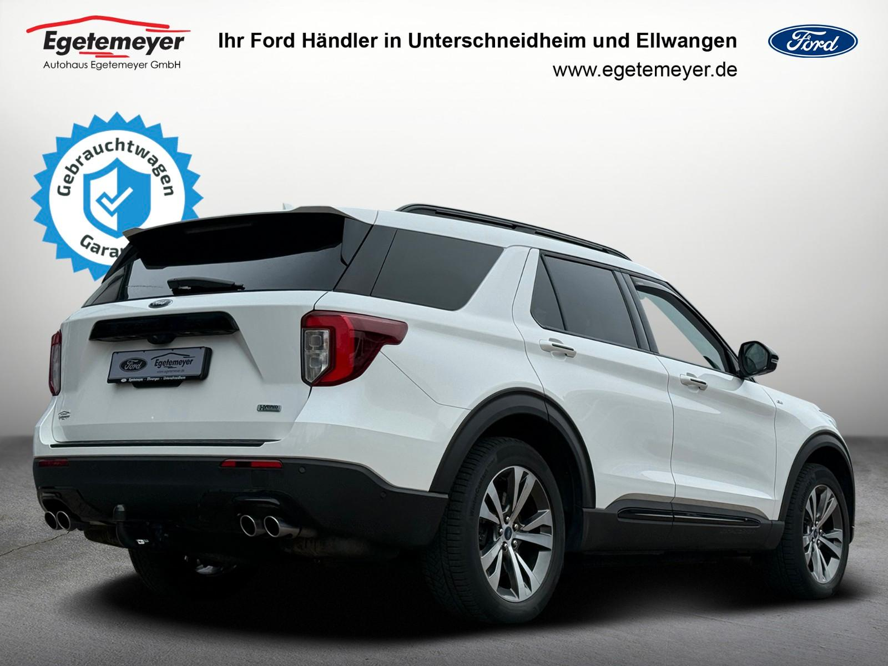

Ford Explorer ST-Line Plug-in-Hybrid 4x4 AUTOMATIK
44900 PLN
Unterschneidheim
40.200 km
TOP GEBRAUCHTWAGEN DIREKT VON DEINEM FORD VERTRAGS-PARTNER
GERNE NEHMEN WIR AUCH DEIN FAHRZEUG INZAHLUNG
HIGHLIGHTS AUSSTATTUNG:
- FORD AUDIOSYSTEM SYNC 3 ( USB / DAB / Bluetooth-Streaming)
- FORD NAVIGATIONSSYSTEM SYNC 3
- FORD BLUETOOTH FREISPRECHEINRICHTUNG (mit Sprachsteuerung)
- 3 ZONEN-KLIMAAUTOMATIK
- ADAPTIVE GESCHWINDIGKEITSREGELANLAGE / SPEED LIMIT
- FRONTSCHEIBE BEHEIZBAR
- SITZHEIZUNG FÜR FAHRER-/ UND BEIFAHRER
- SITZHEIZUNG HINTEN
- SITZBELÜFTUNG
- LENKRADHEIZUNG
- EINPARKHILFE VORNE + HINTEN
- RÜCKFAHRKAMERA
- LED SCHEINWERFER
- FORD LEICHTMETALLFELGEN SOMMER
- FORD LEICHTMETALLFELGEN WINTER
- LICHTAUTOMATIK
- NOTRUF ASSISTENT
- ELEKTRISCH ANKLAPBARE AUßENSPIEGEL
- SPURHALTE ASSISTENT
- REIFENDRUCKKONTROLLE
- PRE-COLLISIONS ASSIET
- DRIVER ALERT
- TOTWINKEL ASSIST (BLIS)
- TRAKTIONSKONTROLLE
- ELEKTRISCHE HECKKLAPPE
- B&O SOUNDSYSTEM
- SCHALTWIPPEN
- PANORAMA / SCHIEBEDACH
- ANHÄNGERKUPPLUNG ABNEHMBAR
- ELEKTRISCHE SITZEINSTELLUNG MIT MEMORY-FUNKTION
FGS.: 78091
ALLE ANGABEN OHNE GEWÄHR - IRRTÜMER VORBEHALTEN
PROBEFAHRT, BERATUNG & BESICHTIGUNG JEDERZEIT NACH VEREINBARUNG MÖGLICH !
E-Mail: fahrzeuge@ford-egetemeyer.de
Internet: www.egetemeyer.de
AUTOHAUS EGETEMEYER GMBH
FORD-VERTRAGSHÄNDLER
BAIERSTR.45
73485 UNTERSCHNEIDHEIM
Sonderausstattung:
Lackierung Star-Weiß Metallic
Weitere Ausstattung:
3.Sitzreihe, Einzelsitze elektr. klappbar (2 Sitzplätze), Adaptive Geschwindigkeits-Regelanlage mit Stop&Go-Funktion, Aktive Geräuschkompensation, Anhängerkupplung Vorbereitung, Antischlupfregelung (ASR), Audio-Navigationssystem Ford mit AppLink, Außenspiegel andersfarbig lackiert / Kontrastfarbe, Außenspiegel elektr. verstell- und heizbar, mit Memory, Brillenfach in Dachhimmel / Dachkonsole integriert, Dachreling schwarz, Einstiegschienen mit Modell-Schriftzug, Elektr. Bremskraftverteilung (EBD), Elektromotor 74 kW (Hybridantrieb), Fahrassistenz-System: aktiver Park-Assistent Plus, Ein- und Auspark-Funktion und teilautomatisierter Fahrzeugführung, Fahrassistenz-System: Ausweich-Assistent (Evasive Steer Assistance, ESA), Fahrassistenz-System: Bergabfahr-Assistent, Fahrassistenz-System: Berganfahr-Assistent (Hill-Holder), Fahrassistenz-System: Notbrems-Assistent, Fahrassistenz-System: Post-Collision-System, Fahrassistenz-System: Pre-Collision-System, Fensterheber elektrisch vorn + hinten, FordPass Connect inkl. eCall, Frontkamera mit Split View, Fußmatten Velours mit Ziernähte, Gepäckraumabdeckung / Rollo, Getriebe Automatik - Typ: 10R80 (10-Stufen), Heckleuchten LED, Heckspoiler Wagenfarbe, Induktionsladeschale für mobile Endgeräte, Innenausstattung: Carbon-Dekor, Innenspiegel mit Abblendautomatik, Intelligent Protection System (IPS), Intelligenter Geschwindigkeits-Begrenzer, Isofix-Aufnahmen für Kindersitz, Karosserie: 5-türig, Klimaautomatik 2-Zonen, Kofferraumdeckel / Heckklappe elektr. betätigt (Öffnung, sensorgesteuert), Kombiinstrument Digitalanzeige 12,3 Zoll, Lenkrad (Sport/Leder, ST), Lenkrad heizbar, Lenkrad mit Schaltwippen, Lenksäule (Lenkrad) elektr. höhen-/längsverstellbar mit Memory, LM-Felgen, Motor 3,0 Ltr. - 267 kW EcoBoost Hybrid, My Key (2. Fahrzeugschlüssel programmierbar), Nebelscheinwerfer LED, Panorama-Schiebedach elektr. mit Solar-Reflect, Parkbremse elektrisch mit Auto-Hold-Funktion, Parkpilotsystem vorn und hinten, Radstand 3025 mm, Reifendruck-Kontrollsystem, Reserverad als Notrad, Rückfahrkamera mit Split View, Schadstoffarm nach Abgasnorm Euro 6d-TEMP, Scheinwerfer LED, Scheinwerfer-Assistent mit Tag-/Nachtsensor, Sitz vorn links elektr. verstellbar (10-fach, mit Memory), Sitz vorn rechts elektr. verstellbar (8-fach), Sitzausstattung: 7-Sitzer, Sitzbezug / Polsterung: Leder Premium, Sitze vorn klimatisiert, Sound-System Bang & Olufsen Play, Sport-Fahrwerk, Sportsitze vorn, Start/Stop-Anlage, Steckdose (12V-Anschluß) im Koffer-/Laderaum, Steckdose 230V, Türverkleidung Leder, Verglasung hinten abgedunkelt (Privacy Glass), Wankneigungskontrolle (Roll Stability Control, RSC)
